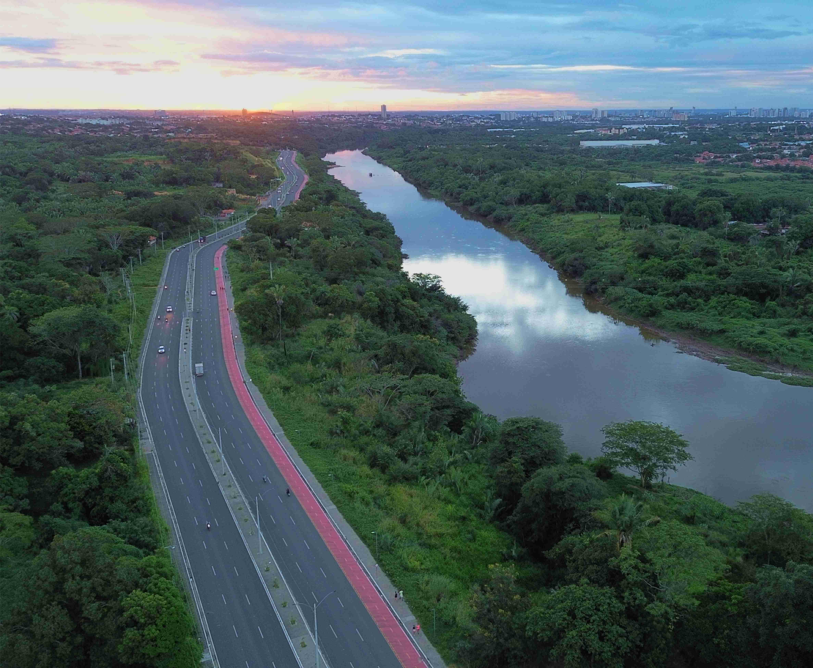
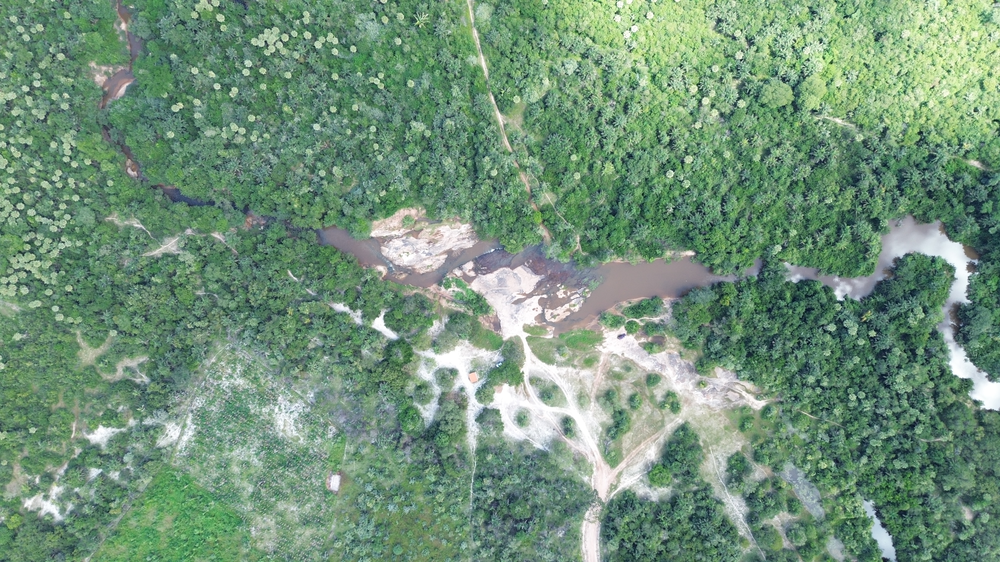

Estudos Hidrológicos
Estimativa de vazões, caracterização de bacias hidrográficas, disponibilidade hídrica e suporte técnico a projetos.
Quando este serviço é necessário?
Os estudos hidrológicos são necessários para diferentes finalidades.
No âmbito da drenagem urbana, por exemplo, esse tipo de estudo é requisitado para determinar os valores de vazão causados por chuvas de projeto, dado necessário para o correto dimensionamento de reservatórios de retenção e detenção, galerias, tubulações e bocas de lobo.
No âmbito do lançamento de efluentes tratados em córregos e riachos, esse tipo de estudo é necessário para definir as vazões de referência dos corpos hídricos e subsidiar o estudo da sua capacidade de autodepuração .
No caso de projetos de usinas fotovoltaicas e outros tipos de empreendimentos industriais ou loteamentos e condomínios, os estudos hidrológicos podem incorporar o estudo da mancha de inundação, que representa o nível máximo de água que determinado rio, córrego ou riacho pode alcançar com uma certa probabilidade.
Com relação a pontes, diques e barragens, os estudos hidrológicos permitem determinar os esforços hidráulicos atuantes na estrutura e as premissas de cálculo para todo o restante do dimensionamento.
Os resultados obtidos são importantes para indicar para os outros profissionais (arquitetos e engenheiros civis, mecânicos, dentre outros) as condições mais desfavoráveis de projeto e evitar que unidades residenciais, por exemplo, sejam alocadas em áreas perigosas dentro do terreno, que barragens sejam rompidas ou rodovias inundadas.
A metodologia de elaboração dos Estudos Hidrológicos envolve:


Nós vamos a campo!
Para trazer robustez aos resultados e evitar a ocorrência de pendências na avaliação por parte dos órgãos ambientais, nós vamos a campo e coletamos dados reais para calibrar os modelos, quando necessário.
Isso agiliza a aprovação do documento e o avanço do seu processo, seja ele um licenciamento ambiental, a obtenção de outorga de direito de uso de recurso hídrico ou a aprovação de um projeto de drenagem de águas pluviais.
E entregamos em tempo recorde
Tudo isso só é possível, porque na nossa equipe técnica contamos com profissionais de referência para a elaboração desses estudos. Unindo velocidade de produção com agilidade na confecção dos relatórios, conseguimos garantir a entrega em tempo recorde e a aprovação do estudo sem pendências de ordem técnica hidrológica.
Solicite agora mesmo o seu orçamento!
Envie as informações iniciais para avaliação da demanda e composição de proposta.
Solicitar orçamento